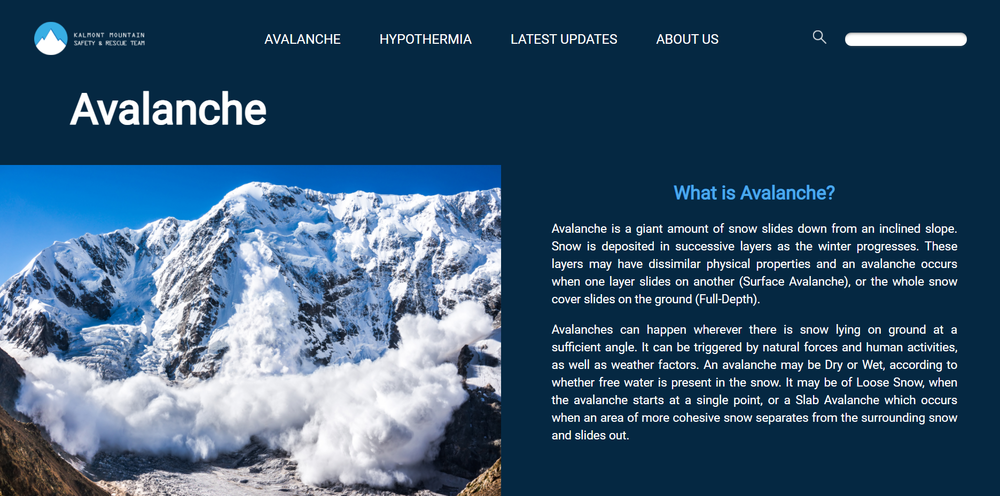
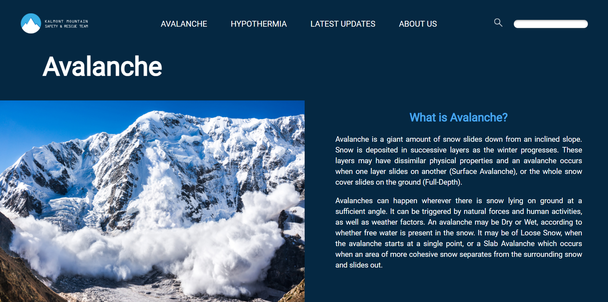

Project: IAT339 Company Website Design
This is a project required to design a website for a fictional company we established, "H.T Cake".
As a food service business, the design of its website tests some really important considerations of
daily element implications, which means, except the aesthetics for the layout, the functions are the
bigger parts where the experiences of the users are mainly relying on. In this case, a good design should
not only satisfy users' comforts: is the color harmonic, is the size of image suitable, etc., but also
guarantee the convenience of achieving the main goals, which on this website, to browse the products
and learn about the information, and very potentially the further steps in making the orders. Starting
from the frameworks, I have settled down the page layouts with necessary elements on. Then with the join
of advanced functions such as the image carousel or styled forms, the website is filled with real contents
and shall be good enough for business uses.
From my perspective, I am satisfied what we (this project is done with a partner) have created out.
The tests for usability were qualified as the most common functions needed in the website of a food
company are all achieved, such as a clear listed product menu, a informative product detail page, a clear
shopping cart and payment page that is easy to follow. And for the design aesthetics, the layout of
the elements across each page are consistent, the color selections are harmonic and suitable for the
theme of the company, the responsive designs also look great, although I feel some of the components
or images are too sharp to be there which requires some finer polish. In general, I feel this project
successfully improved my knowledge on how to design for the demands and needs of the users rather than
making arbitrary decisions.


 
